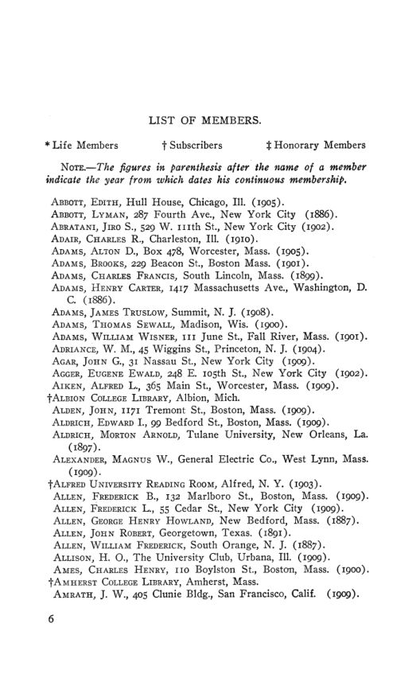

Manual de 1910: 1.360 sócios e a criação da American Economic Review
Leitura: 5 min
O manual de 1910 traz um quadro de 1.360 sócios e assinantes, um caixa ainda apertado e a decisão de trocar o Quarterly e o boletim por uma revista nova: a American Economic Review.


Em 27 de julho de 1909, o caixa da associação estava zerado. O tesoureiro T. N. Carver tinha duas saídas: vender um dos três títulos da cidade de Nova York que formavam a reserva ou tomar um empréstimo. Escolheu o empréstimo, de US$ 500 por três meses, e o quitou com as anuidades de setembro. Os títulos chegaram intactos ao fim do ano.
O episódio está no Hand Book of the American Economic Association de maio de 1910, nº 2 do vol. 11 da terceira série. A estrutura é a dos manuais anteriores: propósitos da associação, estatuto, lista de sócios e atas da vigésima segunda reunião anual, realizada em Nova York de 27 a 31 de dezembro de 1909, quando se comemorou o vigésimo quinto aniversário da fundação. A impressão passara à Princeton University Press, e o escritório do secretário-tesoureiro mudara de Princeton para Cambridge.
Quantos eram os sócios?
Em 22 de dezembro de 1909, o quadro somava 1.205 sócios e 155 assinantes, 1.360 nomes ao todo. No manual de 1909, comentado no nº 98, eram 1.030. Entraram 424 sócios novos no ano; saíram 100 nomes, entre inadimplentes, demissões, mortes e assinaturas canceladas. O ganho líquido foi de 332.
Por que a melhora não resolvia o caixa?
Carver mostrou que parte da alta era antecipação. As cobranças de setembro saíram de US$ 4 em vez de US$ 3, para cobrir dezesseis meses e alinhar todas as anuidades ao ano civil; em 1910, portanto, não haveria receita de anuidades em setembro. Os mais de cem sócios que entraram em novembro e dezembro já tinham pago 1910. Para o ano seguinte, ele estimava despesas de US$ 5.900 e receitas de US$ 4.750, e via perspectiva mais favorável só em 1911.
O secretário apresentou o dilema em três termos: aumentar o quadro, aumentar a anuidade ou publicar menos. Preferia o primeiro. O argumento era o volume entregue: em 1909 o Quarterly somou 965 páginas e o boletim, 438, ou 1.403 páginas pela anuidade de três dólares.
O que se decidiu sobre as publicações?
Na sessão de 30 de dezembro, David Kinley apresentou o relatório da comissão criada um ano antes para estudar a unificação das publicações. A comissão recomendava ampliar o boletim e transformá-lo numa revista trimestral, semelhante à da Royal Economic Society, com resumos de artigos, notas pessoais e resenhas. O nome proposto era American Economic Review. A assembleia aprovou o relatório.
“Que a revista se chame American Economic Review.” (“That the journal be called the American Economic Review.”)
O plano previa um editor-gerente eleito por três anos, com salário de US$ 1.500, e seis editores associados, que absorveriam as funções do Comitê de Publicações, da equipe do boletim e do trabalho editorial da secretaria. O material monográfico continuaria, como números avulsos, artigos seriados ou suplementos. As publicações existentes seguiriam até a nova estar pronta, mas não depois de 31 de dezembro de 1910.
As outras decisões foram de rotina. Edmund J. James, presidente da University of Illinois, foi eleito presidente para 1910; Carver continuou como secretário e tesoureiro, e Kemmerer, como editor do boletim. O local da reunião de 1910 ficou com o Comitê Executivo, e a página de apresentação do manual já anuncia St. Louis. Por proposta de Victor Rosewater, a lista de sócios passaria a indicar o ano de entrada de cada um, e esta já traz a informação. Os trabalhos apresentados em Nova York estão comentados no nº 104.
Na minha leitura
Na minha leitura, o relatório de Carver é uma aula de leitura de fluxo de caixa. Uma receita recorde de anuidades podia parecer solução, mas ele separa o que é crescimento do quadro do que é antecipação: a cobrança de dezesseis meses e os sócios de fim de ano inscritos para 1910 inflaram 1909 à custa do ano seguinte. A decisão de criar a Review, com editor remunerado, reorganiza o produto em vez de cortá-lo, e aposta que um periódico único e mais útil sustentaria o quadro maior de que a associação precisava para fechar as contas.
Glossário
- Assinante (subscriber)
- instituição ou pessoa que recebe as publicações sem ser sócia, como as bibliotecas.
- Ano civil
- período de janeiro a dezembro; as anuidades, antes contadas a partir de setembro, passaram a seguir esse calendário.
- Editor-gerente (managing editor)
- responsável pela condução cotidiana da revista, com apoio de um conselho de editores associados.
- Comitê Executivo
- órgão que cuida dos interesses da associação entre as reuniões anuais.
Artigos desta edição
- American Economic Association — texto institucional (pp. 1–2). Apresenta a associação como reunião de professores de economia de todas as universidades e das principais faculdades, ao lado de homens de negócios, jornalistas, advogados e políticos, com quase duzentos assinantes, entre eles as principais bibliotecas do país. Lembra as reuniões conjuntas com a American Historical Association e outras sociedades e anuncia St. Louis, no Missouri, como sede de 1910. Resume o histórico das publicações desde março de 1886, incluindo o Economic Bulletin, e reafirma que a associação não é órgão de partido, seita ou instituição e que dirigentes e colaboradores não são remunerados. JSTOR
- Constitution of the American Economic Association — texto revisto na reunião anual de dezembro de 1905 (pp. 3–5). Mesmo texto dos manuais anteriores. Os objetivos são o incentivo à pesquisa econômica, em especial ao estudo histórico e estatístico das condições reais da vida industrial, as publicações e a plena liberdade de discussão, sem posição partidária. A anuidade é de três dólares, a contribuição vitalícia de cinquenta, e são admitidos até 25 sócios honorários estrangeiros. O estatuto define os cargos, o Comitê Executivo, com quórum de cinco membros, e o Comitê de Publicações, encarregado das publicações. JSTOR
- List of Members (pp. 6–48). Relação alfabética de sócios e assinantes, com endereços e sinais para sócios vitalícios, assinantes e honorários. Uma nota explica que o número entre parênteses depois de cada nome indica o ano desde o qual a filiação é contínua, como a assembleia de dezembro havia pedido. Com o quadro maior, a lista ocupa 43 páginas, ante 28 no manual anterior. JSTOR
- The Twenty-Second Annual Meeting — atas; relatórios de T. N. Carver, J. H. Hollander, E. W. Kemmerer e D. Kinley (pp. 49–79). Atas da reunião de Nova York, de 27 a 31 de dezembro de 1909, celebrada como vigésimo quinto aniversário da associação, com sessões conjuntas com a American Historical Association e a American Political Science Association. Trazem a lista de presença, o programa, os relatórios do secretário, do tesoureiro, do Comitê de Publicações e do editor do boletim, que contou mais de 3.400 itens no volume de 1909 e 130 livros resenhados. Registram ainda o parecer da auditoria, a eleição de Edmund J. James e a aprovação do relatório Kinley, que cria a American Economic Review. Os trabalhos apresentados estão comentados no nº 104. JSTOR
Fontes
- American Economic Association (pp. 1–2). JSTOR · Internet Archive (PDF)
- Constitution of the American Economic Association (pp. 3–5). JSTOR · Internet Archive (PDF)
- List of Members (pp. 6–48). JSTOR · Internet Archive (PDF)
- The Twenty-Second Annual Meeting (pp. 49–79). JSTOR · Internet Archive (PDF)
- Sumário da edição no JSTOR: American Economic Association Quarterly, 3ª série, vol. 11, nº 2.
Documento em domínio público (EUA, publicado antes de 1931), via JSTOR Early Journal Content e Internet Archive. Resumo e comentário do autor deste site, sem afiliação com a American Economic Association. Encontrou um erro? Escreva: a correção é publicada no próprio texto, com data.
← Nº 105 · O Bulletin de março de 1910: a associação vota criar a AER Nº 107 · O Bulletin de junho de 1910: Walras, Giffen e Sumner →